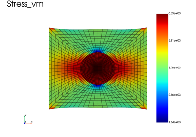

Plasticity
Elastoplastic structures in small and finite strain, with Simcoon and native constitutive laws (bending, simple shear, torsion), and heterogeneous structures: a matrix with an inclusion, linear elastic or elastoplastic, with three ways to assign a material to each element set.

Matrix with a stiff inclusion: three ways to assign materials
Matrix with a stiff inclusion: three ways to assign materials

Elastoplastic matrix with an elastic inclusion (Heterogeneous law)
Elastoplastic matrix with an elastic inclusion (Heterogeneous law)

2D elastoplastic three-point bending (Simcoon EPICP)
2D elastoplastic three-point bending (Simcoon EPICP)

2D elastoplastic three-point bending written from low-level operators
2D elastoplastic three-point bending written from low-level operators


Elastoplastic simple shear of a cube (finite strain, UL)
Elastoplastic simple shear of a cube (finite strain, UL)